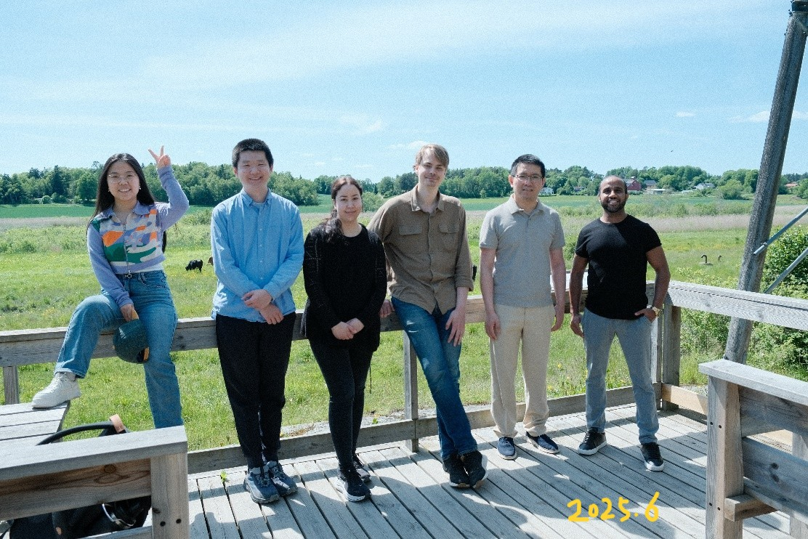

Our Group


News
📰 2026.08 Our studies on structural regulation of porphyrin-based nanoCOFs for advanced chemiresistive NO₂ sensing have been published in Angew Chem and SusMat.
📰 2026.06 Our paper "Crosslinking of Linear Polyimines into Aminal-Linked Porous Organic Polymers for C2 Hydrocarbon/Methane Separation" has been published in Angewandte Chemie International Edition.
📰 2026.06 Congratulations to Michelle for receiving a major research grant from ÅForsk Foundation for the project "Micropollutant Removal from Wastewater Using Sustainable and Functional Porous Organic Polymers".
Featured Publications